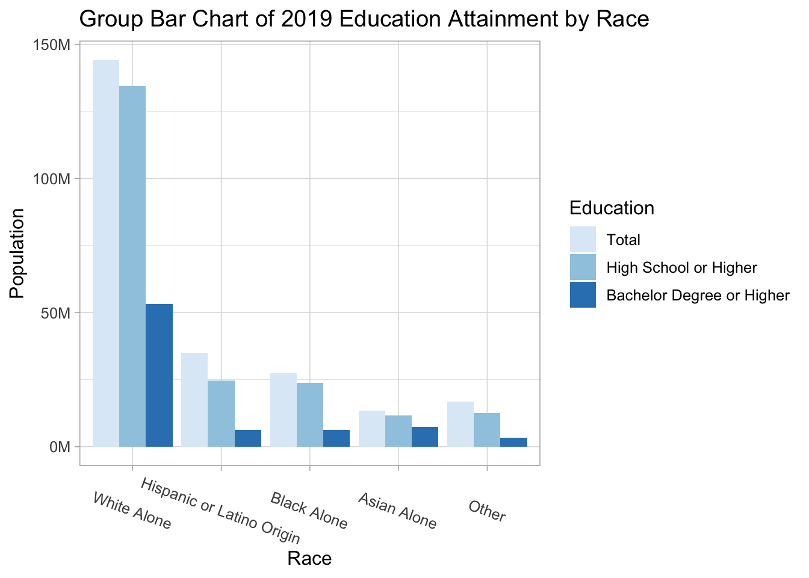
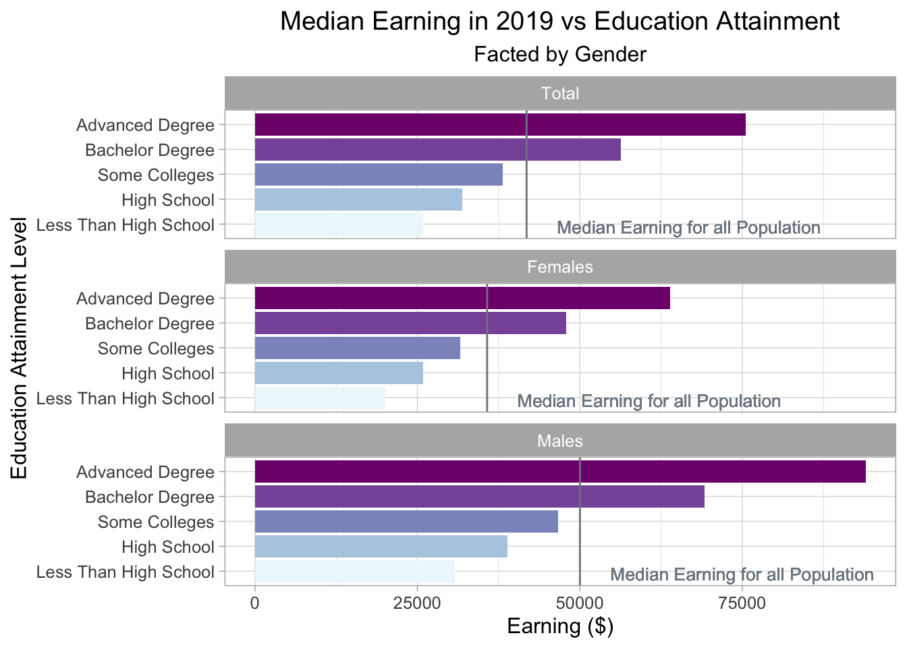
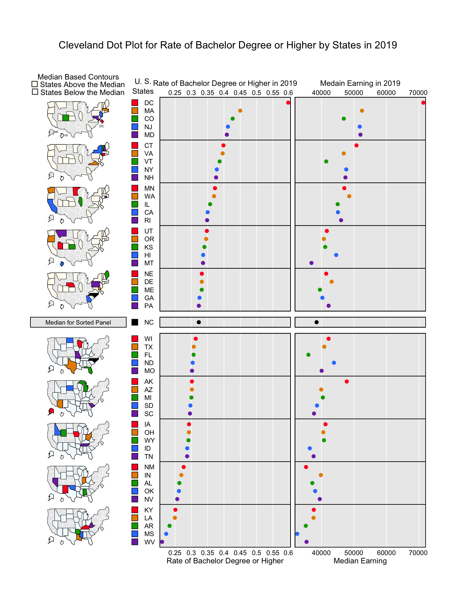

Chapter 5 Results
In this section, we will look at the data on the different levels of education attainment by gender, race, states and possible influence of education attainment on people’s earning and women’s marriage and bearing status in 2019 in the United States.
5.1 Education Attainment and Gender in 2019
We first focus on the level of education attainment and how it differs by gender in 2019. We will plot a mosaic plot to show the relation between these two variables. Notice that since the variable Education has five levels and long names, it’s hard to display them appropriately and clearly in the label of mosaic plot. Therefore, we abbreviate the variable names by converting “Less than High School” to “<HS”, “High School Graduate” to “HSG”, “Some College or Associate Degree” to “SC”, “Bachelor Degree” to “BD”,“Advanced Degree” to “AD”.
edu2019 <- education[education$Year==2019,]
dt <- xtabs(Estimate ~ Education + Gender, data=edu2019)
vcd::mosaic(dt, direction = c("v", "h"),
gp=gpar(fill=c("#fbb4ae","#fbb4ae","#fbb4ae","#fbb4ae","#fbb4ae","#b3cde3","#b3cde3","#b3cde3","#b3cde3","#b3cde3")),
labeling = labeling_border(rot_labels = c(45, 0),abbreviate_labs = c(2, 1)),
main= "Mosaic Plot of Educaton Attainment and Gender in 2019")
From the mosaic plot, we can first observe that over the United States, people have high school graduate degree and some college or associate degree occupy the two largest proportions of the whole population and people who do not go to high school or obtain advanced degree, namely graduate degree or professional degree, occupy the two smallest proportion. Moreover, if we explore more on the relationship between gender and Education, we can observe that females generally obtain higher level of education than males since in the group of less than higher school and high school, female occupy a smaller proportion than male, while in the group of some college or associate degree, bachelor’s degree, or advanced degree, female occupy a larger proportion than male. However, if we look at the whole population, more that 85% percents of the population have graduated from high school, which is a relatively high rate of high school graduate.
##Different Levels of Education Attainment by Race Now we look at the different level of education attainment by race in the United States. Different from the previous plot, in this plot, the levels of education attainment in this plot are “Total”, “Higher School or Higher”, and “Bachelor Degree or Higher”, represent the total population, people have high school or higher degree, and people with bachelor or higher degree respectively.
race_total <- race[race$Gender=="Total",]
ylab <- c(0, 50, 100, 150)
ggplot(race_total)+
geom_col(aes(x=Race,y=Estimate,fill=Education),position ="dodge")+
xlab("Race")+
ylab("Population")+
ggtitle("Group Bar Chart of 2019 Education Attainment by Race")+
scale_y_continuous(labels = paste0(ylab, "M"),
breaks = 10^6 * ylab)+
scale_fill_brewer(palette = 1) +
theme_light(12)+
theme(axis.text.x = element_text(angle=-20, vjust=0.5))
From the above grouped bar chart, we can observe that for White people, who occupy the largest population in the United States, generally have higher level of education attainment than other races since the height of the bar representing the population of white people who have high school graduate or higher degree is closed to the bar representing the total white population. Moreover, Hispanic or Latino people have relative lower high school or higher graduation rate that other races, since the bars representing total population and population for people who obtain higher school graduate or higher degree have the largest gap among all group bars.
Notice that even though the group Other has a larger total population than the group Asian Alone, we plot the bar for Asian Alone first because the group Other is an aggregation of races including native Hawaiian and American Indian and so on, and each race itself has a smaller population than Asian American. Moreover, if we look at the group of Asian American alone, we will notice that the heights of bars representing total population and two levels of educational attainment are pretty closed, which reveals that Asian American has a relatively high rate of people obtain high school graduate or higher degree or even bachelor or higher degree.
5.2 Different Levels of Education Attainment by Race and Gender Together
In this section, we will look at how levels of education attainment vary by gender inside each race by plotting a horizontal stacked bar chart faceted by two educational level, namely higher school graduate or higher and bachelor’s degree or higher.
ggplot(race_gender) +
geom_col(aes(x = fct_rev(Race),y=Estimate, fill = Gender), position = "fill") +
coord_flip()+
facet_wrap(~Education, ncol = 1) +
xlab("Race") +
ylab("proportion") +
theme_light(12)+
theme(legend.position = "bottom") +
guides(fill = guide_legend(reverse = TRUE)) +
scale_fill_brewer(palette = "Pastel1") +
ggtitle("Proportional Breakdown of Gender for Each Race,\n Faceted on Education Attainment")
One interesting finding from the above horizontal stacked bar chart is that for both facets, more than 50% of the population who obtain a high school or higher degree or bachelor or higher degree are females. This slightly unbalanced proportion of education attainment within gender becomes more trivial when we focus on the plot of bachelor’s degree or higher alone, or when we focus on black people alone. Clearly, the proportion of female among all population who obtain high school or higher degree is larger than the proportion of males, and this higher proportion keep increasing when it goes to the proportion of female among all populatoin who obtain bachelor or higher degree.
Moreover, among all races, black females clearly have the highest proportion compared to black males among all black people who obtain higher school or higher degree or bachelor or higher degree. Besides, the two proportional breakdowns of gender for people who have degree of high school or higher or degree of bachelor or higher remain unchanged for white people and Asian American.
5.3 Median Earning for each Level of Education Attainment and Gender
After exploring the proportional break down of education attainment by gender and race, we will now focus on the possible influence of different levels of education attainment. In this section, we will use bar chart faceted by gender to show how the median earning differs for population with different education attainments and how these differences will show up by gender.
earning2019%>%
group_by(Education)%>%
mutate(total_earn =earning_total )%>%
ungroup()%>%
ggplot()+
geom_col(aes(x=Education,y=Earning, fill = Education), position = "dodge")+
scale_fill_brewer(palette = 3)+
geom_hline(aes(yintercept=total_earn),col="#7c8790")+
coord_flip()+
facet_wrap(~Gender, ncol = 1) +
ggtitle("Median Earning in 2019 Based on Education Attainment \n and Gender") +
geom_text(aes(label ="Median Earning for all Population",x = 0.9, y = total_earn+25000),size = 3.5,color= "#7c8790")+
theme_light(12)+
theme(legend.position = "None")
Clearly we can observe from the plot than the people’s earnings increase as they obtain higher degree of education. Moreover, we can find that for all genders and the total population, median earning for people who obtain a bachelor’s degree or higher is higher than the overall median earning for all population. If we explore more on the heights of bars, we can observe that there’s a huge increase in earning when people obtain their bachelor’s degree and this huge increase in earning appear again when people finish their graduate or professional degree. This finding reveals the positive influence of higher education on people’s earning and the high rate of return of higher education investment regarding to future earning.
If we look closer among genders, median earnings for females are lower than males as well as the total population regardless of gender in any levels of education attainment. Males with advanced degree, namely graduate or professional degree have the highest median earning and females with education attainment that is less than high school earn at least among all groups.
5.4 Education Attainment and Women’s Marital and Bearing Status
In last section, we notice that though high education attainment largely increase people’s earning, there’s unequal earning within genders for all levels of education level. To explore more influence of education attainment on women’s life, we will use a new data set containing information of marriage status for women who give birth or not in 2019 in different education levels. We will plot a horizontal stacked bar chart to visualize how women’s choices of marriage or giving birth to baby differ by their education attainment.
ggplot(birth) +
geom_col(aes(x = as.factor(Marriage), y = Estimate, fill = fct_rev(Education)), position = "fill")+
coord_flip() +
facet_wrap(~Give_birth, ncol = 1)+
ylab("proportion") +
xlab("Marriage Status")+
theme_light(12)+
theme(legend.position = "bottom") +
guides(fill = guide_legend(reverse = TRUE)) +
scale_fill_brewer(palette = 3,direction = -1)+
theme(legend.title = element_text(size = 7),legend.text = element_text(size=7))+
labs(fill = "Education")+
ggtitle("Proportion of Education Attainment on Marriage Status, \n Faceted on Giving Birth or Not in 2019")
Clearly, women who finished their higher school or obtained some college degree occupy a largest percentage of the whole women population, so they still occupy the largest proportion of women who gave birth or not. Moreover, the proportional breakdown of education attainment for women giving birth of not in 2019 remained unchanged for married women. However, the proportion of women who obtained some college degree or higher is larger for unmarried women who did not give births than who gave births in 2019.
One interesting finding is that for women who gave birth to babies in 2019, the proportional breakdown of education attainment was different for women who were married or not. More than 50% of unmarried women who gave birth to babies in 2019 status had a high school graduate degree or lower. However, approximately 75% of married women who gave birth to babies in 2019 had some college degree or higher. From this, we can observe some relationship between education attainment and the unmarried birth and women’s choices of marital status while giving birth. Women with higher degree of education tended to choose to give births after they were married.
5.5 Education Attainment and Median Earning by States
In this section, we will conduct a linked micromap to see how education attainment and median earning different by states in the United states in 2019 and explore potential relationship among education attainment, median earning, and states. To visualize the data, we will plot a linked macromap containing a cleveland dot plot for rate of bachelor’s degree or higher for each state, a clveland dot plot for the median earning for the total population in each state, and a map indicating the state corresponding the dot in the cleveland dot plot. Notice that both clevand dot plot are sorted by the rate of bachelor’s degree or higher for each state.
panelDesc <- data.frame(
type=c("mapmedian","id","dot","dot"),
lab1=c("","","Rate of Bachelor Degree or Higher in 2019","Medain Earning in 2019"),
lab3=c("","","Rate of Bachelor Degree or Higher","Median Earning"),
col1=c(NA,NA,1,2)
)
ExTitle <- c( "Cleveland Dot Plot for Rate of Bachelor Degree or Higher by States in 2019")
micromapST(statesDF,panelDesc,sortVar=1,ascend=FALSE,title=ExTitle) 
## [1] "micromapST Ends"From the plot, one obvious finding is that Washington DS has the highest race of the bachelor’s degree or higher and median earning, and its rate and earning are much higher and can be consider a upper outlier among all the states. Corresponding the dot in the cleveland dot plot for rate of bachelor degree or higher to the state in the map, though there’s no a clear and trivial pattern about how education attainment differs geographically, we can still notice that states with high rate of bachelor degree or higher generally locate on the east or west coast or west coast while states with low rate of bachelor degree of higher generally locate on the central and south part of the country.
From the plot, there’s no a strict positive linear relationship between race of bachelor degree or higher and median earning for each state. This is explainable since earning is not determined by a single educational factors but also associated with local policy, geographical location and resources, and so on. However, we can still observe a slight trend for higher median earning and higher rate of bachelor degree or higher.
Two states worth further research are Alaska and Montana. Alaska has a relatively low rate of bachelor degree or higher than many others states and it’s below the median. However, it has a relatively higher median earning for all population compared to states have similar rates of bachelor degree or higher or even states have higher rates then it. This may related to its rich mineral resources, developed tourism, and relatively small size of population.